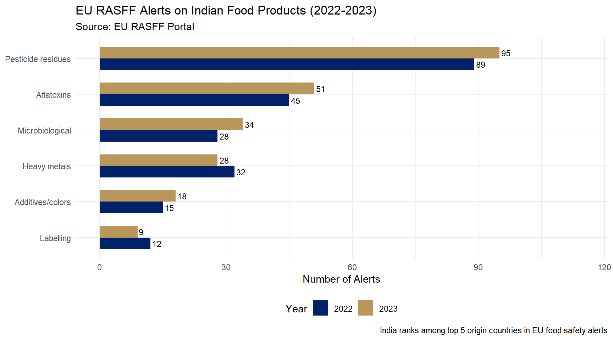

Lecture 15: SPS Measures and Codex Alimentarius
Econ 2203 | International Trade and Policy in Agriculture
Department of Development Economics
2026-08-01
Recap: Lecture 14
Lecture 14 examined the Agreement on Agriculture – the WTO rulebook for farm support and market access.
Key ideas from Lecture 14:
- Three Pillars: Market Access, Domestic Support, Export Competition
- India’s bound tariffs (~113% average) = policy flexibility
- Three Boxes: Green (unlimited), Blue (conditional), Amber (limited)
- India’s MSP procurement exceeds de minimis – protected by Peace Clause
- Doha Round dead; permanent solution pending
Today’s Bridge
You now understand that WTO rules govern tariffs and subsidies. But even if tariffs are zero and subsidies are legal – goods can still be blocked at the border.
How? Through food safety and quality standards.
This lecture covers the SPS Agreement and Codex Alimentarius – the standards that determine whether Indian agricultural exports can actually reach foreign consumers.
Opening Case: The MDH-Everest Spice Scandal
April 2023 – A Crisis for Indian Spice Exports
- Singapore Food Agency ordered recall of MDH Madras Curry Powder and Everest Fish Curry Masala
- Hong Kong Centre for Food Safety recalled MDH and Everest products
- Maldives banned imports of specific MDH and Everest products
- EU RASFF (Rapid Alert System for Food and Feed): multiple Indian spice alerts triggered
The violation: Ethylene oxide (ETO) residue above maximum permitted levels
Ethylene oxide: A fumigant used to kill bacteria (Salmonella) and insects in stored spices. Classified as a probable carcinogen. EU/Singapore MRL: 0.02 mg/kg (effectively zero tolerance).
Estimated export disruption: Tens of millions of dollars; reputational damage to India’s Rs 35,000 crore+ spice export industry
Why This Happened
Spices are stored in warehouses and can carry Salmonella. Exporters fumigated with ETO to ensure microbiological safety – a common practice.
But ETO MRLs were tightened in EU and Singapore well below what Indian producers knew or monitored.
The question: Was this genuine food safety regulation or disguised protectionism?
Answer: In this case, genuine – ETO is a real carcinogen; the standard had scientific basis. But the principle of distinction matters enormously for WTO disputes.
India’s Response: FSSAI banned ETO fumigation for export-bound spices (2023). Spices Board mandated pre-export testing.
What Are SPS Measures?
Sanitary and Phytosanitary Measures
Defined in WTO SPS Agreement Annex A:
Sanitary measures: Protect human or animal life/health from risks from: - Food additives, contaminants, toxins, pesticide residues - Veterinary drug residues in food - Diseases carried by animals (FMD, bird flu, BSE) - Organisms in food (Salmonella, E. coli, Listeria)
Phytosanitary measures: Protect plant health from: - Pests (locusts, mango seed weevil, citrus greening) - Diseases (wheat rust, rice blast) - Invasive species through traded plant material
SPS vs. TBT: An Important Distinction
SPS Agreement: Food safety, animal health, plant health
TBT Agreement: All other technical regulations – labelling, packaging, environmental standards, sustainability certifications, organic certification
The distinction matters because: - SPS standards must be scientifically based (strict discipline) - TBT standards: “necessary” to fulfil legitimate objectives, but the scientific requirement is less strict
When in doubt: food safety measures = SPS; labelling/quality standards = TBT
The WTO SPS Agreement
WTO SPS Agreement: Core Principles
Five Key Principles (1995)
1. Right to Protect Every country has the sovereign right to set its own level of sanitary and phytosanitary protection – even above international standards. There is no “harmonisation” obligation.
2. Scientific Basis (Art. 2) SPS measures must be based on scientific principles and not maintained without sufficient scientific evidence.
3. Non-Discrimination (Art. 2) SPS measures must not arbitrarily discriminate between countries with similar conditions. If India is FMD-free in one region, a country should not ban all Indian meat.
4. International Standards (Art. 3) SPS measures based on Codex Alimentarius / OIE / IPPC standards are presumed WTO-consistent – no further justification needed.
If stricter than international standards, the member must conduct a risk assessment (Art. 5) to justify the higher protection level.
5. Precautionary Principle (Art. 5.7) When scientific evidence is insufficient, a member may provisionally adopt SPS measures. Must: - Seek additional information - Review the measure within a reasonable time
The SPS Agreement creates a two-track system: align with Codex/OIE/IPPC (easy compliance) or justify stricter measures with your own risk assessment (hard but possible).
Codex Alimentarius and OIE
Codex Alimentarius Commission (CAC)
Established: 1963 by FAO and WHO
Covers: Food safety - Maximum Residue Limits (MRLs) for pesticides - MRLs for veterinary drug residues - Food additive standards - Contaminant limits (aflatoxins, heavy metals)
188 member countries
India: Founding member; represented by FSSAI
WOAH (formerly OIE)
World Organisation for Animal Health
Established: 1924, Paris
Covers: Animal health and zoonoses - Disease status classification (FMD-free zones, etc.) - International standards for safe trade of animals - Veterinary medicines - Animal welfare
India is member; uses WOAH standards for import/export conditions on livestock and livestock products
IPPC and the SPS Standards Hierarchy
IPPC
International Plant Protection Convention
Established: 1952 under FAO
Covers: Plant health - International Standards for Phytosanitary Measures (ISPMs) - Pest Risk Assessment (PRA) methodology - Phytosanitary certificates - Treatment protocols (heat, irradiation, cold)
India’s DPPQS (Directorate of Plant Protection) implements IPPC. Issues phytosanitary certificates for all plant exports.
SPS Standards Hierarchy
WTO SPS Agreement Article 3:
- Codex/OIE/IPPC standard → presumed WTO-consistent; no justification needed
- More protective than Codex → permitted only if based on scientific risk assessment (Art. 5)
- Precautionary measures → temporary; must seek additional information for review
Two-track system: - Align with Codex/OIE/IPPC → easy compliance path - Justify stricter measure with own risk assessment → hard but possible
India’s strategy: ensure products meet Codex standards as baseline, then challenge stricter import-country standards by demanding risk assessment justification.
Codex Alimentarius: How It Works
“The Food Code” – Setting the Global MRL Standard
Scientific committees behind Codex:
JMPR (Joint FAO/WHO Meeting on Pesticide Residues): Evaluates pesticides; recommends MRLs. Considers: acceptable daily intake (ADI), dietary exposure, good agricultural practice (GAP).
JECFA (Joint Expert Committee on Food Additives): Evaluates food additives and veterinary drug residue limits.
Process: Exposure assessment + toxicological evaluation + dietary intake modeling = proposed MRL
If Codex sets an MRL of 0.5 mg/kg for chlorpyrifos in spices, this becomes the international benchmark.
Why Codex Standards Matter for India
If India’s exports comply with Codex MRLs, no WTO member can block them on SPS grounds without doing their own risk assessment.
If an importing country sets a stricter standard than Codex (e.g., EU’s 0.01 mg/kg for many pesticides), they must provide: 1. A scientific risk assessment 2. Evidence that the Codex standard does not achieve their chosen protection level
Many EU standards pass this test (precautionary approach). Some may not – creating WTO dispute opportunities.
India’s strategy: ensure Indian products meet Codex standards as the baseline. Then challenge importing country standards stricter than Codex by demanding the risk assessment justification.
Codex Alimentarius: Standards Portfolio

Figure 1: Codex Alimentarius: Standards Portfolio (2023) Source: Codex Alimentarius Commission, FAO/WHO.
FSSAI: India’s Food Safety Regulator
Food Safety and Standards Authority of India
Established under the FSSAI Act, 2006 (fully operational 2011). Headquarters: New Delhi.
FSSAI’s Roles:
- Sets food safety standards for domestic market
- India’s national Codex Contact Point
- Accredits food testing laboratories (NABL)
- Issues export health certificates (through EIC for many products)
- Regulates food businesses (importers, processors, retailers)
- Runs FoSTaC (Food Safety Training and Certification)
Recent FSSAI actions on SPS compliance: - Updated pesticide MRLs for 200+ pesticides (2023) - Banned ETO fumigation for export-bound spices - Harmonised aflatoxin limits with Codex (15 ppb for food, 10 ppb for baby food) - Launched FSSAI Food Safety Connect portal for exporters
Gap Between FSSAI and Import Country Standards
Some FSSAI standards are still below Codex or more permissive than importing country standards:
- Pesticide MRLs: FSSAI covers ~320 pesticides; Indian farmers use 300+ pesticides. Gaps exist.
- Aflatoxin limits in spices: FSSAI = 15 ppb; EU = 10 ppb; Japan = 10 ppb
- Veterinary drug residues: FSSAI has fewer VMDRs than Codex
The compliance challenge: Indian exporters must meet the importing country’s standard (or Codex if importing country has none) – not just FSSAI’s domestic standard
India’s SPS export challenges (examples I)
- Spices: ETO / pesticide residues / aflatoxin (EU, Singapore, USA)
- Marine products: antibiotic residues, Salmonella (USA, EU, Japan)
- Rice: pesticide MRLs (EU)
- Fresh grapes: pesticide MRLs (EU)
- Mangoes: pest risks (USA, Japan, Korea)
India’s SPS export challenges (examples II)
- Peanuts: aflatoxin (EU)
- Buffalo meat: veterinary residues; animal health (Gulf, SEA)
- Honey: antibiotics and pesticide contamination (EU, USA)
- Common pattern: lab testing + traceability + farm practices must align
- SPS barriers often bite hardest in premium markets
Scale: why SPS matters for India
- Agri exports (2023–24): about $50B
- High-exposure earners: rice, marine, spices, buffalo meat
- EU RASFF alerts on India-origin products: 200+ per year
- US FDA import refusals: India often ranks 3rd–5th
- Takeaway: SPS is a major non-tariff barrier for export growth
EU RASFF Alerts on Indian Food Products

Figure 2: EU RASFF Alerts on Indian Food Products (2022-2023) Source: European Commission, RASFF Portal (2023).
Case Study 1: Spice Rejections 2023-24
The Ethylene Oxide (ETO) Problem
What is ETO? An industrial chemical used to fumigate spices – kills bacteria (especially Salmonella), moulds, and insects in bulk stored spices.
Why used: Spices are dried agricultural products; moisture during storage leads to Salmonella and aflatoxin. ETO is effective.
The problem: ETO is a Group 1 carcinogen (IARC). When used on food, residues remain. EU and Singapore: MRL = 0.02 mg/kg (effectively zero).
Detection: EU systematically tests Indian spices since 2020. Found ETO residues 5-20x above MRL in multiple consignments.
Supply Chain Analysis
Where does ETO enter? - Usually at fumigation stage: large warehouses, cold storage facilities, export consolidation points - NOT at the farm level
Why did exporters use it? - Salmonella contamination is a real risk – and causes EU rejections too - ETO was commonly used internationally until MRLs were tightened - Indian exporters were slow to adapt to EU’s tightening
India’s corrective actions: - FSSAI: ETO use prohibited for export spices - Spices Board: GAP training to 500,000 farmers - Mandatory pre-export testing at NABL-accredited labs - Cold disinfestation and steam treatment as alternatives
Reasons for Spice Export Rejections

Figure 3: Reasons for Spice Export Rejections (2022-23) Source: Spices Board India; FSSAI.
Case Study 2: Indian Shrimp in the USA
India: World’s Largest Shrimp Exporter (since 2012)
India exported USD 4.0 billion of seafood to the USA in 2023 (world’s top destination).
The Antibiotic Residue Problem
Shrimp aquaculture uses antibiotics to: - Prevent bacterial diseases (Vibrio, Aeromonas) - Improve survival rates in intensive ponds
USA/EU banned antibiotics in food animals: - Chloramphenicol: Carcinogen; zero tolerance (0.3 ppb) – FDA automatic detention - Nitrofurans (furazolidone): Zero tolerance - Oxytetracycline: 2 ppm limit
Indian shrimp occasionally tested positive – triggering FDA import alerts and automatic detention of entire shipments from affected companies.
India’s Response: The MPEDA System
Marine Products Export Development Authority (MPEDA) created the National Residue Control Plan (NRCP):
- Farm-level testing before harvest
- MPEDA labs in all major shrimp states (AP, Telangana, Odisha, Gujarat, WB)
- Third-party certification (BAP, ASC, GlobalGAP)
- Antibiotic-free certification programs
- Traceability: farm to fork (pond to export container)
Result: FDA removed India from “automatic detention” list for most companies (2015). Trust gradually rebuilt.
India’s shrimp industry serves as a model of SPS compliance improvement: investment in testing, traceability, and farmer training converted a crisis into market dominance. 50% of US shrimp imports are from India.
Case Study 3: Basmati Rice and EU Pesticide Limits
India’s Rice Export Profile
- India: world’s largest rice exporter (~40% of global trade, 2022)
- Basmati: premium segment; EU, Middle East, UK
- Non-basmati: Africa, Bangladesh, Philippines
The Tricyclazole Problem
Tricyclazole: fungicide used against rice blast disease (Pyricularia oryzae). Very effective; widely used in Indian paddy cultivation.
EU MRL for tricyclazole in rice (2016): 0.01 mg/kg (This is the EU “default” MRL = lowest measurable limit = effectively zero)
Codex MRL for tricyclazole in rice: 1 mg/kg (100x higher)
EU’s justification: EFSA (EU food safety body) could not establish an Acceptable Daily Intake (ADI) for tricyclazole – so zero tolerance applied.
Impact on India
EU non-basmati rice imports from India: severely restricted since 2016
Basmati: APEDA monitoring programme required farmers to avoid tricyclazole before harvest. Shift to alternative fungicides (propiconazole, azoxystrobin).
The WTO question: Is EU’s 0.01 mg/kg standard WTO-consistent?
Arguments: - EU: EFSA risk assessment shows no safe ADI = justified precaution (Art. 5.7) - India: Codex JMPR reviewed same data and set 1 mg/kg; EU is being protectionist
India has raised this at WTO SPS Committee (formal concern registered)
Lesson: Indian farmers must change agronomic practices to meet importing country standards. This requires extension services, alternative pest management, and R&D for substitute fungicides.
Animal Health: WOAH Standards and India
Foot and Mouth Disease (FMD): India’s Biggest Constraint
India is FMD endemic – the virus circulates in cattle and buffalo populations.
Impact: India cannot export fresh/chilled beef and pork to: - EU (requires FMD-free zone certification) - USA (FMD-free requirement) - Australia, New Zealand - Japan, South Korea
India CAN export to: - Gulf countries (accept FMD+ origin with inspection) - Southeast Asia (some countries) - Africa (mainly frozen buffalo meat)
India is the world’s largest buffalo meat exporter (USD 3.5B) but limited to markets that accept FMD-present-country products. Premium markets (EU, USA, Japan) are closed.
India’s FMD Control Programme
National Animal Disease Control Programme (NADCP): - Launched 2019 - Rs 13,300 crore budget - Target: 100% vaccination of cattle and buffalo - Goal: FMD-free status by 2025 (revised to 2030) - Brucellosis control component
If India achieves FMD-free zone status: Could export chilled beef/pork to EU, Japan – massive export opportunity (India has world’s largest cattle population: 193 million)
WTO Dispute DS430 (India-Agricultural Products): USA challenged India’s ban on US poultry due to Highly Pathogenic Avian Influenza (HPAI). India lost – its HPAI measures were found to violate SPS Art. 5 (not based on proper risk assessment). India had to modify import protocols.
IPPC and Plant Quarantine: Mangoes to the USA
The Mango Market Access Challenge
India is world’s largest mango producer (~55% of global output). Yet India barely exports mangoes to the USA and Japan.
Why? Phytosanitary barriers.
Mango Seed Weevil (Sternochetus mangiferae): Lives inside mango seed; not detectable by visual inspection. USA APHIS requires zero tolerance – if present in any consignment, entire shipment rejected and market access reviewed.
USA’s phytosanitary protocol: Vapor Heat Treatment (VHT) - Mango heated to internal fruit temperature of 47.2 degrees C for 20 minutes - Kills all pests including seed weevil - Expensive: requires VHT chambers at packing houses
Bilateral Protocol Negotiation
VHT for mango exports to USA was negotiated bilaterally between: - India’s DPPQS (plant quarantine) - USA’s APHIS (Animal and Plant Health Inspection Service)
India invested in VHT facilities in Maharashtra, Uttar Pradesh, Andhra Pradesh.
Result: Indian Alphonso, Kesar, and other varieties now exported to USA (~5,000-8,000 MT/year). Still tiny vs. production potential.
Japan protocol: Irradiation treatment (200 Gy gamma/X-ray) accepted. Facilities limited.
Phytosanitary protocols are negotiated product-by-product, country-by-country. India must negotiate 50+ protocols for 20+ products. Slow, expensive, but essential for premium market access.
TBT Agreement: Beyond Food Safety
Technical Barriers to Trade (TBT Agreement)
TBT covers standards and regulations NOT related to food safety/animal-plant health: - Labelling requirements - Packaging regulations - Environmental standards - Sustainability certifications - Organic certification - Carbon footprint disclosure
Examples affecting India’s agri exports:
- EU ban on single-use plastics: affects packaging of Indian processed foods
- EU organic regulation (EU 834/2007): India must have bilateral equivalency agreement – FSSAI-EU organic equivalency being renegotiated
- Halal certification: Gulf markets require halal for meat, poultry, and some processed foods
EU Carbon Border Adjustment Mechanism (CBAM) – Emerging TBT/SPS Challenge
CBAM (fully operational 2026) requires carbon certificates for imports of cement, steel, aluminium, fertilisers, electricity, hydrogen.
Not directly on food – yet. But EU “Farm to Fork” strategy and sustainability standards could extend to agricultural products.
Potential future barriers: - Mandatory deforestation-free certification (EU Deforestation Regulation – EUDR) - Supply chain transparency requirements (traceability, QR codes, blockchain) - Carbon footprint labelling for food products
India must engage proactively with these emerging standards before they become barriers.
Equivalence and Mutual Recognition
WTO SPS Article 4: Equivalence
“Members shall accept the sanitary or phytosanitary measures of other Members as equivalent, even if these measures differ from their own or from those used by other Members trading in the same product, if the exporting Member objectively demonstrates to the importing Member that its measures achieve the importing Member’s appropriate level of sanitary or phytosanitary protection.”
In plain language: If India can prove that FSSAI’s food safety system achieves the same level of consumer protection as EU’s EFSA, EU should accept Indian food without retesting.
This is very difficult in practice – few equivalence agreements exist globally.
India’s Equivalence Arrangements
Achieved: - India-USA Organic Equivalency: FSSAI organic standards recognised as equivalent to USDA NOP for specific products (2012) - Japan-India VHT: Vapor heat protocol = phytosanitary equivalence for mango - EU-India: Health certificate arrangements for marine products (not full equivalence)
Ongoing negotiations: - India-EU organic equivalency renewal - India-UK post-Brexit food safety arrangements (FSSAI-FSA)
Mutual Recognition Agreements (MRAs) reduce compliance costs dramatically for Indian exporters – but require India’s standards to be demonstrably equivalent to importing country standards. This is the strongest incentive for FSSAI modernisation.
SPS Compliance Costs for India
Who Bears the Cost of Compliance?
SPS compliance is expensive – particularly for developing countries:
Typical compliance costs:
- Laboratory testing: Rs 1,500-5,000 per consignment (pesticide residue panel = 40+ compounds)
- Cold chain: Rs 5-8 per kg for temperature-sensitive products
- Certification: EIC health certificate = Rs 2,500-10,000 per consignment
- Pre-export testing: Spices Board mandated ETO test = Rs 2,000/sample
- Third-party certification (BAP, ASC, GlobalGAP): Rs 50,000-2,00,000 per farm/facility per year
- VHT facility construction: Rs 5-10 crore per facility
India’s annual SPS compliance infrastructure cost (agri exports): estimated Rs 500-800 crore
India’s Testing Infrastructure
NABL-accredited food testing labs: 200+ (growing rapidly)
Key labs: - EIC (Export Inspection Council): Regional labs in Chennai, Mumbai, Kolkata, Kochi, Delhi - APEDA: Residue monitoring programme; 6 regional labs - MPEDA: Aquaculture testing labs in Nellore, Bhubaneswar, Chennai - Spices Board: Testing laboratory in Cochin
WTO technical assistance: SPS Agreement provides for capacity building; FAO/WHO Codex Trust Fund supports developing country participation in Codex meetings.
Small exporters and farmers bear proportionally higher compliance costs – this creates a structural disadvantage for India’s fragmented agricultural sector
India’s Comprehensive SPS Strategy
A Six-Pillar Strategy:
- (a) Prevention: GAP training (Spices Board, APEDA), IPM, farmer training on pre-harvest intervals, food safety culture (FSSAI Eat Right India)
- (b) Detection: NABL lab accreditation, real-time RASFF monitoring, FSSAI surveillance, pre-shipment testing mandates (EIC, Spices Board, MPEDA)
- (c) Certification: FSSAI-accredited labs, EIC health certificates, third-party international certifications
- (d) Bilateral Negotiation: Phytosanitary protocols (product-by-product), equivalence agreements, bilateral veterinary certificates
- (e) WTO Advocacy: Register Specific Trade Concerns (STCs) at WTO SPS Committee; challenge scientifically unjustified standards
The NTB Dilemma: Safety vs Protectionism
Genuine Food Safety Standard or Disguised Protectionism?
WTO SPS Agreement: Standards must be: - Scientifically based (risk assessment, not arbitrary) - Non-discriminatory (same standard for all origins) - Not more trade-restrictive than necessary to achieve the protection level
Likely genuine: - EU tricyclazole 0.01 mg/kg (EFSA could not establish ADI – precautionary basis has scientific merit even if contested) - USA zero tolerance for chloramphenicol (carcinogen: no safe level argument) - Japan’s fumigation-free requirements for some products (genuine pest risk from tropical insects)
Possible disguised NTBs: - EU’s very strict aflatoxin limit (10 ppb vs. Codex 15 ppb) in spices: contested whether the marginal health benefit justifies trade restriction - Japan’s requirement for irradiation treatment for mangoes (alternatives available, less trade-restricting) - Some EUDR (Deforestation Regulation) product scope interpretations that could target Indian cotton and soy
India’s WTO tool: Register Specific Trade Concerns (STCs) at the WTO SPS Committee. 59 STCs registered against EU measures – India has raised several.
The burden of proof under SPS Agreement: If a measure is consistent with Codex, importer need not justify. If stricter than Codex, importer must provide risk assessment. This is India’s legal weapon.
Emerging SPS/TBT Challenges for India
The Next Wave of Standards
Antimicrobial Resistance (AMR) WHO declared AMR a global health threat. Future measures: - Strict limits on antibiotic use in livestock and aquaculture - Mandatory AMR monitoring as export condition - India’s National Action Plan on AMR (2017-2021) needs renewal and stronger implementation
EU Deforestation Regulation (EUDR, 2025) No deforestation-linked products after Dec 2020. Affects: - Soy (used in Indian poultry feed chains) - Cattle products from some regions - Possibly cocoa, coffee from India
Requires geo-referenced supply chain data. Huge compliance investment.
Digital Traceability
EU Farm to Fork strategy requires: - QR codes linking product to farm of origin - Blockchain-based supply chain records - Real-time pesticide usage data
India’s infrastructure: APEDA E-cert, Spices Board TraQiS, MPEDA Tracenet. Coverage: ~30-40% of exports.
Carbon Footprint Labelling
EU exploring mandatory carbon labels on food products. This would require Life Cycle Assessment (LCA) data for Indian agricultural products – enormous capacity gap.
India must invest NOW in digital traceability, AMR surveillance, and carbon accounting infrastructure – or face the next generation of SPS/TBT barriers when they become mandatory (2025-2030 horizon)
Key Takeaways: SPS Measures and Codex
Six Things to Remember from Lecture 15
SPS measures are the most important NTB for India’s agricultural exports – more critical than tariffs in premium markets (EU, USA, Japan). Annual agri exports at risk: USD 20+ billion.
Codex/OIE/IPPC set the international standard – measures aligned with these are presumed WTO-consistent. India should ensure its products meet Codex MRLs as the minimum standard.
Scientific basis is mandatory – if an importing country’s standard is stricter than Codex, it must conduct a risk assessment. This is India’s WTO legal tool against possible disguised NTBs.
Investment in compliance infrastructure pays off: India’s shrimp industry rebuilt trust with the USA through NRCP and third-party certification. Spices industry learning the same lesson post-ETO crisis.
Phytosanitary protocols must be negotiated bilaterally – product-by-product, country-by-country. India needs dedicated resources for this slow but essential process.
Emerging challenges (AMR, digital traceability, EUDR, carbon footprint) require proactive investment now – not reactive crisis management after export bans.
Next Lecture: Export Procedures and Documentation
Lecture 16 (August 11, 2026):
Export Procedures and Documentation
Turning India’s agricultural comparative advantage into actual export earnings– the practical mechanics.
We will cover:
- Export documentation: IEC, shipping bill, certificate of origin, phytosanitary certificate, health certificate
- Export financing: pre-shipment and post-shipment credit, ECGC insurance
- Export promotion bodies: APEDA, MPEDA, Spices Board, Tea Board
- Port procedures: customs clearance, inspection, containerisation
- Case study: Exporting Alphonso mangoes to the EU from Nashik to Rotterdam
A Thought Experiment
You are a farmer in Nashik with 10 tonnes of Alphonso mangoes ready for export to the Netherlands.
What documents do you need? What inspections? What organisations do you deal with? How is the payment made? What can go wrong?
Lecture 16 walks through every step of this journey – from the orchard gate to the Rotterdam supermarket shelf.
Reading: - APEDA: Export Procedures for Fresh Fruits and Vegetables - DGFT: Foreign Trade Policy 2023-28 (Chapter 3: Export Promotion) - RBI: Master Direction on Export of Goods and Services
Appendix
Additional Resources
Further Reading
- Lecture notes and APEDA/WTO official documents
- FSSAI: Food Safety Standards Authority of India
- RBI/DGCI&S/APEDA databases for latest data
Key Data Sources
- DGCI&S: India’s merchandise trade
- RBI: Balance of payments data
- APEDA: Agricultural export statistics
- WTO: Tariff and trade databases
Econ 2203 | International Trade and Policy in Agriculture